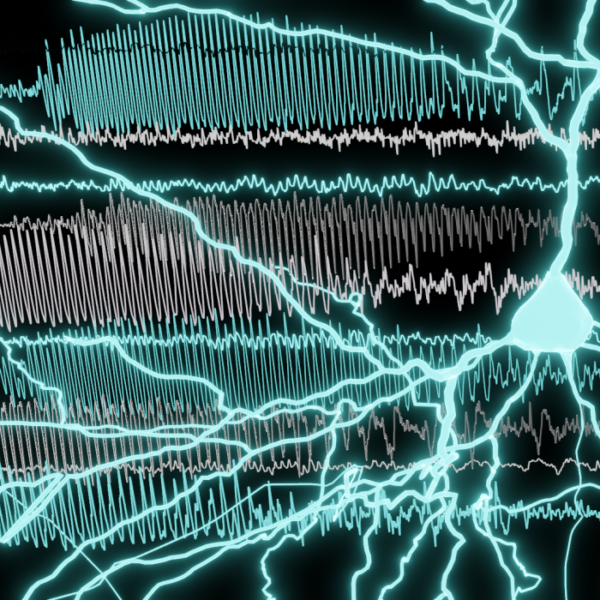
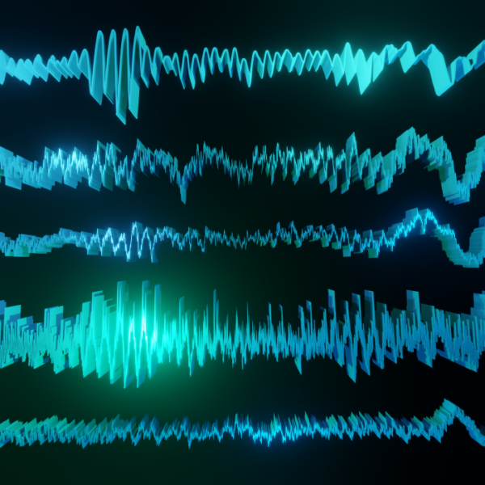
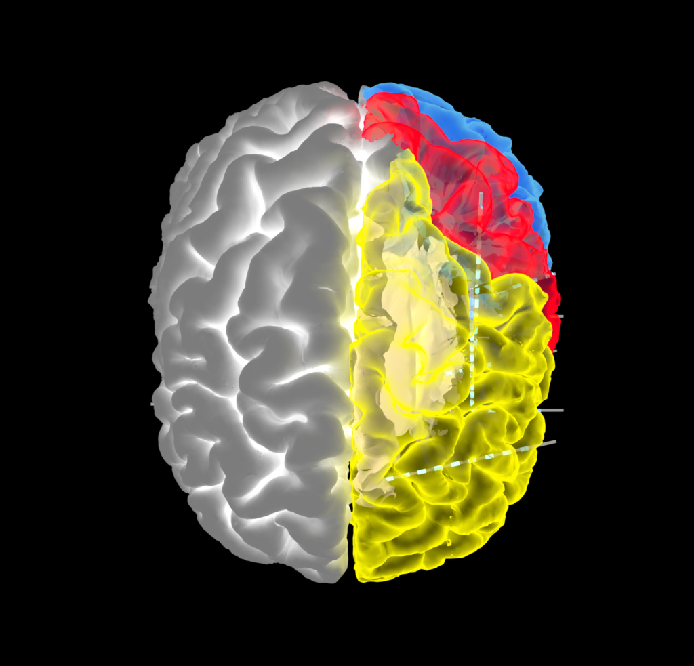

Epilepsy & Neuromodulation Team
Mapping the micro- and macro-scale dynamics of human focal seizures, cortical oscillations, and parameter-specific intracranial electrical stimulation.


Neurophysiology of Epilepsy
The fundamental mechanisms of seizures and epilepsy remain one of neuroscience's most urgent challenges. While seizures involve abnormal synchronization of neural networks, the precise dynamics initiating, propagating, and terminating these events vary systematically with anatomical onset location and brain state. Our team utilizes microelectrodes alongside clinical intracranial sEEG to record individual neuronal ensembles and small circuits at the resolution of millimeters and milliseconds—uncovering conserved dynamical pathways to seizure onset and termination.


Neuromodulation of the Human Brain
From foundational cortical mapping to contemporary responsive neurostimulation (RNS) and deep brain stimulation (DBS), direct electrical stimulation is a powerful window into causal brain connectivity.
We employ single-pulse electrical stimulation (SPES) and 100 Hz theta-burst protocols to systematically characterize local and distant cortico-cortical evoked potentials (CCEPs) across cortical layers, revealing how stimulation amplitude, duration, and frequency remodel functional human brain networks.
Cortical and Subcortical Oscillations
Brain waves—from fast gamma ripples to superficial alpha and slow delta rhythms—reflect the coordinated communication of vast neural populations.
Our team investigates how these oscillations are generated and propagate across distinct cortical layers and brain states, distinguishing pathological epileptiform ripples from physiological rhythms that integrate cortical processing.

Selected Team Publications (12)
-
Huang Y, Zelmann R, Hadar P, Dezha-Peralta J, Richardson RM, Williams ZM, Cash SS, Keller CJ, Paulk AC. Theta-burst direct electrical stimulation remodels human brain networks. Nat Commun. 2024 Aug 14;15(1):6982. doi:10.1038/s41467-024-51443-1
-
Paulk AC, Zelmann R, Crocker B, Widge AS, Dougherty DD, Eskandar EN, Weisholtz DS, Richardson RM, Cosgrove GR, Williams ZM, Cash SS. Local and distant cortical responses to single pulse intracranial stimulation in the human brain are differentially modulated by specific stimulation parameters. Brain Stimul. 2022. doi:10.1016/j.brs.2022.02.017
-
Salami P, Borzello M, Kramer MA, Westover MB, Cash SS. Quantifying seizure termination patterns reveals limited pathways to seizure end. Neurobiol Dis. 2022;165:105645. doi:10.1016/j.nbd.2022.105645
-
Crocker B, Ostrowski L, Williams ZM, Dougherty DD, Eskandar EN, Widge AS, Chu CJ, Cash SS, Paulk AC. Local and distant responses to single pulse electrical stimulation reflect different forms of connectivity. Neuroimage. 2021;237:118094.
-
Fumeaux NF, Ebrahim S, Coughlin BF, Kadambi A, Azmi A, Xu JX, Abou Jaoude M, Nagaraj SB, Thomson KE, Newell TG, Metcalf CS, Wilcox KS, Kimchi EY, Moraes MFD, Cash SS. Accurate detection of spontaneous seizures using a generalized linear model with external validation. Epilepsia. 2020;61:1906-1918. doi:10.1111/epi.16628
-
Salami P, Peled N, Nadalin JK, Martinet LE, Kramer MA, Lee JW, Cash SS. Seizure onset location shapes dynamics of initiation. Clin Neurophysiol. 2020;131(8):1782-1797. doi:10.1016/j.clinph.2020.04.168
-
Nair DR et al. (RNS System LTT Study). Nine-year prospective efficacy and safety of brain-responsive neurostimulation for focal epilepsy. Neurology. 2020 Sep 1;95(9):e1244-e1256. doi:10.1212/WNL.0000000000010154
-
Halgren M, Ulbert I, Bastuji H, Fabó D, Erőss L, Rey M, Devinsky O, Doyle WK, Mak-McCully R, Halgren E, Wittner L, Chauvel P, Heit G, Eskandar E, Mandell A, Cash SS. The generation and propagation of the human alpha rhythm. Proc Natl Acad Sci U S A. 2019 Nov 19;116(47):23772-23782. doi:10.1073/pnas.1913092116
-
Basu I, Robertson MM, Crocker B, Peled N, Farnes K, Vallejo-Lopez DI, Deng H, Thombs M, Martinez-Rubio C, Cheng JJ, McDonald E, Dougherty DD, Eskandar EN, Widge AS, Paulk AC, Cash SS. Consistent linear and non-linear responses to invasive electrical brain stimulation across individuals and primate species with implanted electrodes. Brain Stimul. 2019; PMC30904423.
-
Halgren M, Fabó D, Ulbert I, Madsen JR, Eross L, Doyle WK, Devinsky O, Schomer D, Cash SS, Halgren E. Superficial slow rhythms integrate cortical processing in humans. Sci Rep. 2018; PMC29391596.
-
Truccolo W, Ahmed OJ, Harrison MT, Eskandar EN, Cosgrove GR, Madsen JR, Blum AS, Potter NS, Hochberg LR, Cash SS. Neuronal ensemble synchrony during human focal seizures. J Neurosci. 2014;34:9927-9944. PMC4107409.
-
Truccolo W*, Donoghue JA*, Hochberg LR, Eskandar EN, Madsen JR, Anderson WS, Brown EN, Halgren E, Cash SS. Single neuron dynamics in human focal epilepsy. Nat Neurosci. 2011;14:635-641. doi:10.1038/nn.2782